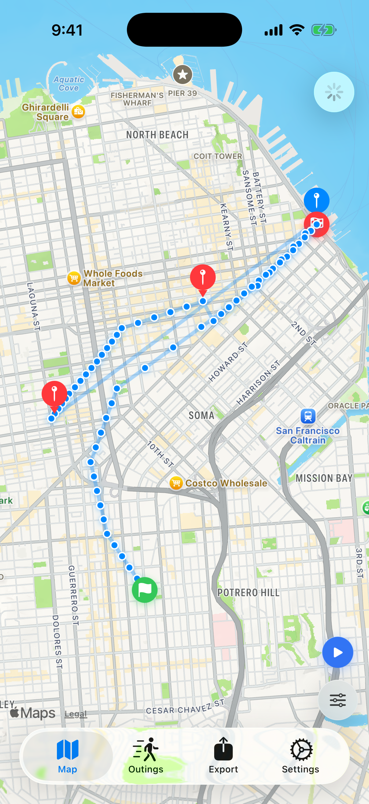
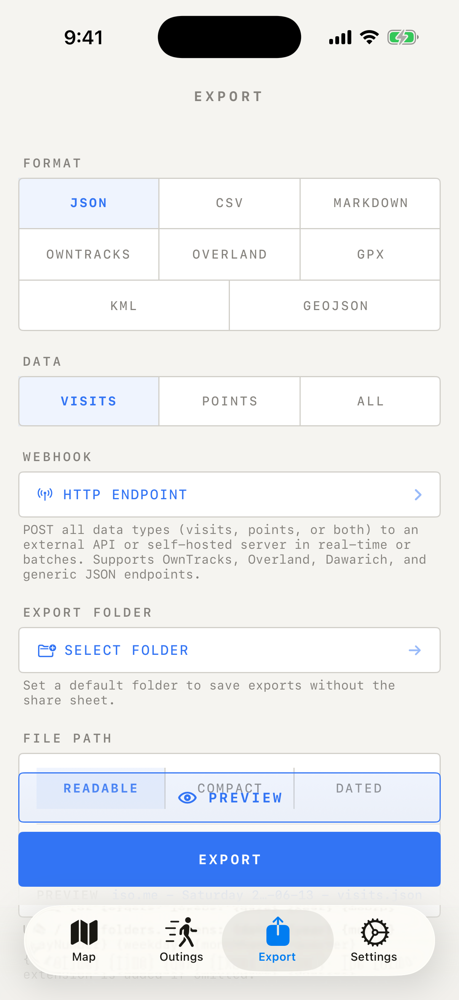
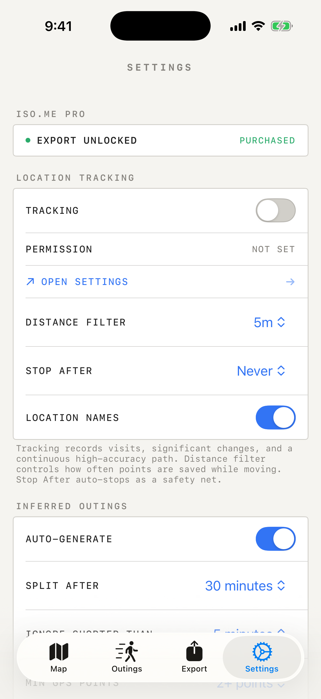

A private location journal is a personal record of places and routes that stays useful without becoming a social feed, an ad profile, or a cloud archive you never meant to create. On iPhone, the safest pattern is simple: keep the working copy on-device, review it locally, export portable files when you need them, and only send data elsewhere when you make that choice on purpose.



Why a private location journal is different
Most people do not need location history because they want another dashboard. They need it because memory is imperfect. Where did we park near the pier? Which route did that walk take? What day did I visit that client site? Which neighborhood did I pass through on the way to dinner? A local journal answers those questions without requiring every coordinate to become part of someone else's infrastructure.
That distinction matters because location data is sensitive. A timeline can reveal your home, routines, work patterns, health visits, travel, religious practice, relationships, and habits. Before turning on any location recorder, ask two questions: who stores the data, and how do I leave with a copy?
iso.me is built around the local-first answer. Your visits and routes are stored on your iPhone for core tracking. There is no iso.me account requirement and no iso.me server-side location archive for your everyday journal. If you enable features that talk to the network, such as readable place-name lookup through Apple's geocoding service or optional webhooks that you configure, treat those as explicit choices rather than the default mental model.
A simple private-journal checklist
Capture visits and routes without turning your life into a feed
A good location journal has two layers: places and paths. Places are the stops you care about: a restaurant, hotel, trailhead, client site, beach, school, or errand. Paths are the routes between them: a hike, commute, road trip, city walk, bike ride, or site visit.
iso.me can record visits automatically and can record detailed routes when tracking is enabled. Use those modes differently. Passive visit history is good for the ordinary shape of a day. High-accuracy route recording is better for intentional sessions where the path itself matters. That distinction helps with battery life and keeps the journal calmer.
- For everyday recall, let the app collect visits and significant movement quietly.
- For a trail, photo walk, road trip, or inspection route, start a more intentional tracking session.
- Use auto-stop settings as a safety net so precise tracking does not run longer than intended.
Review your map locally first
The map is the fastest way to make the journal feel real. You can scan where you stopped, see route lines, and connect points to the day they happened. This is useful even when you never export anything. The app becomes a private memory instrument: open it, answer a question, close it.
When readable place names help, iso.me can use Apple's geocoding service to turn coordinates into names or addresses. That makes the timeline easier to read, but it is still worth understanding the boundary: coordinate-to-place lookup is a network service governed by Apple's policies, not an iso.me location database.
Use names when they make your journal useful, but do not confuse readable labels with privacy magic. The private default is local storage; exports, geocoding, and webhooks are actions you choose.
Export without locking your memory inside one app
A private journal is only truly yours if you can leave with a copy. iso.me's export workflow is designed for that: visits, route points, or both can be prepared as files you understand and can keep elsewhere.
The most human-readable path is Markdown. The most spreadsheet-friendly path is CSV. The most tool-friendly path is JSON. For maps and location tools, formats such as GPX, KML, and GeoJSON are useful because other software already knows how to draw or process them. The current app also exposes location-history formats such as OwnTracks and Overland for people who already use those ecosystems.
- Use Markdown for a journal-like archive you can read in any notes app.
- Use CSV when you want rows, filters, and spreadsheets.
- Use JSON when you want structured data for scripts or backups.
- Use GPX, KML, or GeoJSON when you want routes and points in mapping tools.
Exported files are powerful because they leave the app boundary. Store them deliberately. If you put them in cloud storage, email them, or import them into another service, that copy follows the privacy rules of the place you sent it.
Use optional webhooks carefully
Some people want a private journal that also feeds a self-hosted archive, a home server, or a custom automation. iso.me includes webhook settings for users who want to post selected location data to an HTTP endpoint in real time or batches.
This is intentionally an advanced feature. A webhook changes the privacy model because data leaves the phone and lands wherever the endpoint is hosted. That can be exactly what you want if you run the server, understand the logs, and control retention. It is not the same as keeping everything only on the device.
- Prefer self-hosted or trusted endpoints.
- Use authentication for endpoints that support it.
- Send only the data type you need, not everything by default.
- Check the receiving service's backups, logs, and retention policy.
Build habits that keep the journal useful
The best private archive is boring in the right ways. Check the settings once in a while. Confirm location permission still matches your intent. Export before wiping a device or deleting the app. Keep a periodic backup if the history matters. Delete old data when it no longer serves you.
Also be honest about what a location journal is not. It is not tax advice, legal advice, or a guarantee that every movement was captured perfectly. GPS can be noisy, permissions can change, devices can be offline, and batteries can die. Treat your timeline as a memory and records aid, not as authoritative proof for a situation that needs a professional standard.
Used that way, a private location journal is quietly valuable. It gives you the personal benefits of remembering places and routes while avoiding the default assumption that your location history has to live in a giant remote account forever.
Start with a local journal.
Download iso.me, keep your working location history on your iPhone, and export when you need a portable copy.